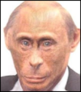

|

|
Recently, rumors have spread that the Kremlin dictator Vladimir Putin is weakened by several diseases at once, but at the same time he continues to wage a brutal war against Ukraine. Rumors about the existence of the Russian president's doubles have been circulating online for years.
British intelligence: "Putin is very ill, and when he dies, his death will be kept secret for weeks, if not months. There is also a possibility that he is already dead. It's impossible to know. It is believed that Putin used doppelgangers in the past when he was ill, and the Kremlin could do it now. Putin heads a small group of high-ranking officials who are completely loyal to him," they also claim that the Kremlin will specifically keep silent about Putin's death, since a coup may occur in Russia against the background of such news, and the army command will decide on the withdrawal of troops from the territory of Ukraine.
Thus, adherents of the theory of doubles point to certain changes in appearance Putin, among which: a difference in the structure of the skull, a change in the cut of the eyes and the shape of the lower jaw, a displacement of the mole on the left cheek, different shapes of the earlobe and nose, as well as hair growth lines.
My Verdict:
I am inclined to believe that Putin really has clones. If compared by Table of Putins, then you can see serious changes in the shape of the face, which is impossible to fake with plastic (or very problematic ), and since different "Putins" appeared in public in a fairly short period of time (March 2015) - I think it's impossible for it to be 1 person.
|
{kind=link}